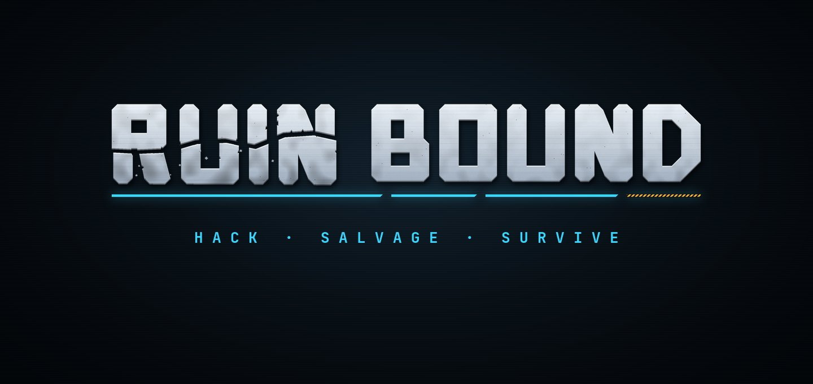
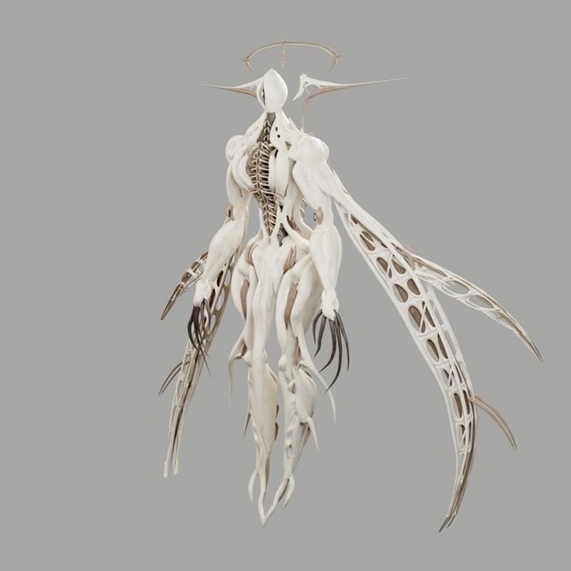
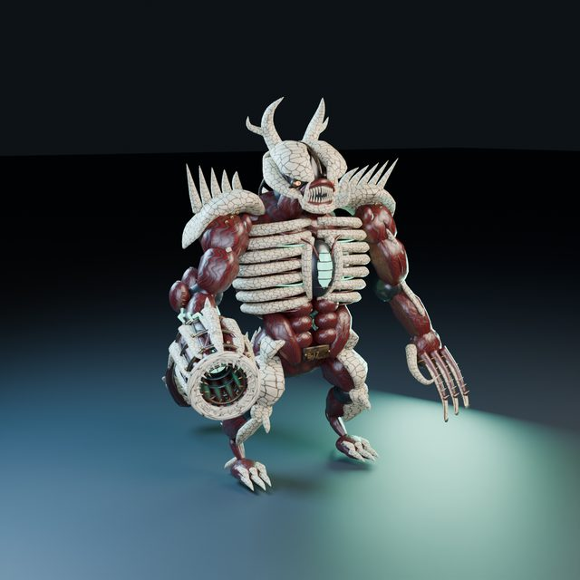
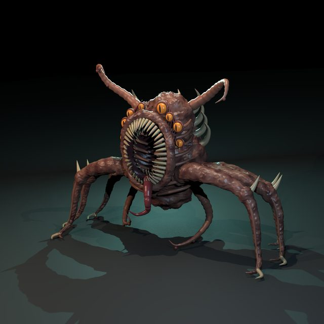
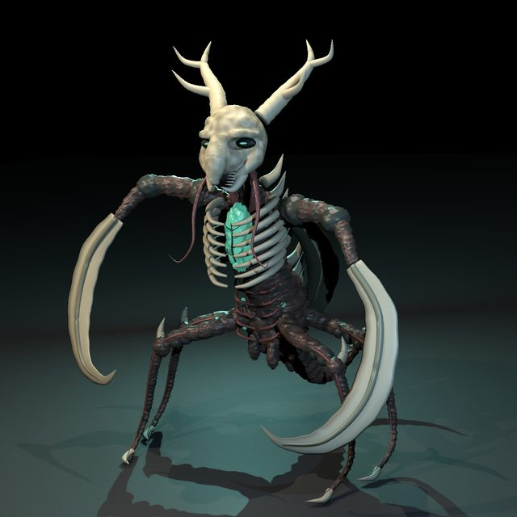

Siokan Games is an independent studio making RuinBound, a co-op game about exploring an endless, procedurally generated megastructure. We build it in Godot with Claude Code: gameplay code, automated playtesting, procedural art and even the music.
Engine
Automated playtest bots
Daily dev partner
Co-op exploration of an endless, procedurally generated megastructure. Hack, salvage, survive.

Step off the balcony and the structure just keeps going. RuinBound's world is a megastructure with no edge: corridors, shafts and halls generated chunk by chunk from a seed as you walk, thirteen levels deep, cut by canyons kilometres long and spanned by bridges.
Every kilometre the region changes, from the core to industrial sectors, archives, ruins and the abyss, and with it the interiors: hangars, factories, data vaults, reactors and habitation blocks. Between them rise megashafts, hanging cities, sinkholes and pillar halls you can see from three kilometres away.
In developmentBio-weapons sculpted for RuinBound in Blender and Houdini.




We're a very small team. Claude Code is how we keep up with the scope of a 3D co-op game set in an endless procedural world.
Claude Code works across our GDScript codebase: the chunk generator, its pathfinding validator, deterministic co-op world sync, enemy systems, and large multi-commit refactors.
Together we built 60+ headless bots: they generate and verify the world across hundreds of seeds, walk it chunk to chunk on autopilot, compare co-op checksums between host and guest, and fight, fly and climb.
Claude Code drives Blender, Houdini and Substance headless: sculpting our bio-weapon creatures, building bosses and props from parts, and baking textures, including the RuinBound logo.
Glitch artcore tracks composed, synthesized and mixed entirely in Python, exported as stems, MIDI and Reaper projects, plus audio-reactive 3D visuals in three.js.
Playtests, partnerships, or curious how a tiny team builds a co-op game with Claude? We'd love to hear from you.